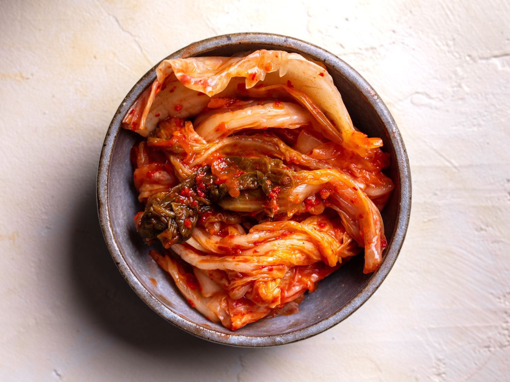

Kimchi
김치
Ingredients
makes 1 cookie
- 10 pounds baechu (napa cabbage)
- 1 cup kosher salt
- ½ cup sweet rice flour
- ¼ cup sugar
- water
- 1 cup of crushed garlic
- 1 to 2 tbs ginger, minced
- 1 cup onion, minced
- 1 cup fish sauce
- salty, fermented squid (see FAQ, above)
- 2½ cups Korean hot pepper flakes (gochugaru) (to taste)
- 2 cups leek, chopped
- 10 green onions (diagonally sliced)
- ¼ cup of carrot, julienned
- 2 cups Korean radish, julienned
Directions
- Trim the discolored outer leaves of the napa cabbage.
- Cut the cabbage lengthwise into quarters and remove the cores. Chop it up into bite size pieces
- Soak the pieces of cabbage in cold water and put the soaked cabbage into a large basin. Sprinkle salt.
- Every 30 minutes, turn the cabbage over to salt evenly (total salting time will be 1½ hours).
- 1½ hours later, rinse the cabbage in cold water 3 times to clean it thoroughly.
- Drain the cabbage and set aside.
Make porridge:
- Put 3 cups of water and sweet rice flour in a pot and mix it well and bring to a boil. Keep stirring until the porridge makes bubbles (about 5 minutes).
- Add ¼ cup sugar. Stir and cook for a few more minutes until it’s translucent.
- Cool it down.
Make kimchi paste:
- Place the cold porridge into a large bowl. Now you will add all your ingredients one by one.
- Add fish sauce, hot pepper flakes, crushed garlic, minced ginger, and minced onion.
*tip: it’s much easier to use a food processor!
- Wash and drain the salty squid. Chop it up and add it to the kimchi paste.
- Add green onions, chopped leek, Korean radish, and carrot.
Action! Mix the cabbage with the kimchi paste!
- Put the kimchi paste in a large basin and add all the cabbage. Mix it by hand.
*tip: If your basin is not large enough to mix all the ingredients at once, do it bit by bit.
- Put the kimchi into an air-tight sealed plastic container or glass jar.
How do you know if it's fermented or not?
One or 2 days after, open the lid of the Kimchi container. You may see some bubbles with lots of liquids, or maybe sour smells. That means it’s already being fermented.
 Brian S Park
Brian S Park